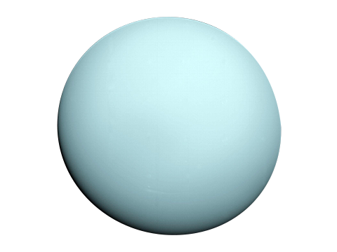
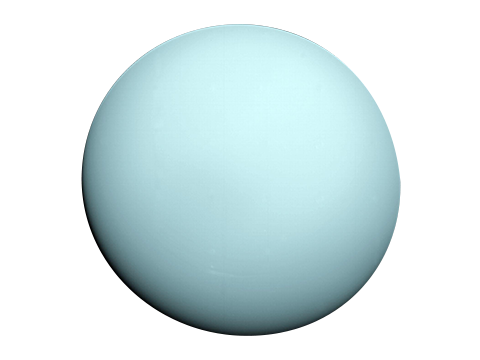

The solar system is the sun and everything that orbits around it. It includes the planets and their moons as well as numerous asteroids and comets. These objects are all held in orbit around the sun by the sun's strong gravity.The solar system is made up of the sun and everything that orbits around it, including planets, moons, asteroids, comets and meteoroids. It extends from the sun, called Sol by the ancient Romans, and goes past the four inner planets, through the Asteroid Belt to the four gas giants and on to the disk-shaped Kuiper Belt and far beyond to the teardrop-shaped heliopause. Scientists estimate that the edge of the solar system is about 9 billion miles (15 billion kilometers) from the sun. Beyond the heliopause lies the giant, spherical Oort Cloud, which is thought to surround the solar system.
For millennia, astronomers have followed points of light that seemed to move among the stars. The ancient Greeks named them planets, meaning "wanderers." Mercury, Venus, Mars, Jupiter and Saturn were known in antiquity, and the invention of the telescope added the Asteroid Belt, Uranus, Neptune, Pluto and many of these worlds' moons. The dawn of the space age saw dozens of probes launched to explore our system, an adventure that continues today.
There have been five human-made objects so far, Voyager 1, Voyager 2, New Horizons, Pioneer 10 and Pioneer 11, that have crossed the threshold into interstellar space.
Many scientists think our solar system formed from a giant, rotating cloud of gas and dust known as the solar nebula. As the nebula collapsed because of its gravity, it spun faster and flattened into a disk. Most of the material was pulled toward the center to form the sun. Other particles within the disk collided and stuck together to form asteroid-sized objects named as planetesimals, some of which combined to become the asteroids, comets, moons and planets.
The sun is by far the largest object in our solar system, containing 99.8% of the solar system's mass. It sheds most of the heat and light that makes life possible on Earth and possibly elsewhere. Planets orbit the sun in oval-shaped paths called ellipses, with the sun slightly off-center of each ellipse. NASA has a fleet of spacecraft observing the sun, such as the Parker Solar Probe, to learn more about its composition, and to make better predictions about solar activity and its effect on Earth.
The smallest planet in our solar system and nearest to the Sun, Mercury is only slightly larger than Earth's Moon.
From the surface of Mercury, the Sun would appear more than three times as large as it does when viewed from Earth, and the sunlight would be as much as seven times brighter. Despite its proximity to the Sun, Mercury is not the hottest planet in our solar system – that title belongs to nearby Venus, thanks to its dense atmosphere.
Because of Mercury's elliptical - egg-shaped - orbit, and sluggish rotation, the Sun appears to rise briefly, set, and rise again from some parts of the planet's surface. The same thing happens in reverse at sunset.
Venus is the second planet from the Sun and is Earth's closest planetary neighbor. It’s one of the four inner, terrestrial (or rocky) planets, and it’s often called Earth’s twin because it’s similar in size and density. These are not identical twins, however – there are radical differences between the two worlds.
Venus has a thick, toxic atmosphere filled with carbon dioxide and it’s perpetually shrouded in thick, yellowish clouds of sulfuric acid that trap heat, causing a runaway greenhouse effect. It’s the hottest planet in our solar system, even though Mercury is closer to the Sun. Surface temperatures on Venus are about 900 degrees Fahrenheit (475 degrees Celsius) – hot enough to melt lead. The surface is a rusty color and it’s peppered with intensely crunched mountains and thousands of large volcanoes. Scientists think it’s possible some volcanoes are still active.
Our home planet is the third planet from the Sun, and the only place we know of so far that’s inhabited by living things.
While Earth is only the fifth largest planet in the solar system, it is the only world in our solar system with liquid water on the surface. Just slightly larger than nearby Venus, Earth is the biggest of the four planets closest to the Sun, all of which are made of rock and metal.
The name Earth is at least 1,000 years old. All of the planets, except for Earth, were named after Greek and Roman gods and goddesses. However, the name Earth is a Germanic word, which simply means “the ground.”
Mars is the fourth planet from the Sun – a dusty, cold, desert world with a very thin atmosphere. Mars is also a dynamic planet with seasons, polar ice caps, canyons, extinct volcanoes, and evidence that it was even more active in the past.
Mars is one of the most explored bodies in our solar system, and it's the only planet where we've sent rovers to roam the alien landscape
Mars is one of the most explored bodies in our solar system, and it's the only planet where we've sent rovers to roam the alien landscape
Perseverance rover – the largest, most advanced rover NASA has sent to another world – touched down on Mars on Feb. 18, 2021, after a 203-day journey traversing 293 million miles (472 million kilometers). The Ingenuity helicopter rode to Mars attached to the belly of Perseverance.
The solar system is believed to have formed roughly 4.568 billion years ago.
While the inner planets are rocky planets, the outer planets are referred to as gas giants.
Inner planets have a mostly iron core, surrounded by a mantle.
The surface of the inner planets is characterized by volcanoes, canyons, craters, and mountains, and earth is the only one known to have water on its surface. Earth and Mars both have polar ice caps that are permanent (unless global warming continues).
Ceres is a dwarf planet that is believed to have surface features and a rocky core, making it very similar to the inner planets.
Mercury is the closest inner planet to the Sun, followed by Venus, Earth, and Mars.
The inner planets have no rings circling them and zero to a few moons. Earth has one moon, and Mars has two. Mercury and Venus do not have any moons.

 


Jupiter has a long history of surprising scientists – all the way back to 1610 when Galileo Galilei found the first moons beyond Earth. That discovery changed the way we see the universe.
Fifth in line from the Sun, Jupiter is, by far, the largest planet in the solar system – more than twice as massive as all the other planets combined.
Jupiter's familiar stripes and swirls are actually cold, windy clouds of ammonia and water, floating in an atmosphere of hydrogen and helium. Jupiter’s iconic Great Red Spot is a giant storm bigger than Earth that has raged for hundreds of years. .
Saturn is the sixth planet from the Sun and the second-largest planet in our solar system.
Adorned with thousands of beautiful ringlets, Saturn is unique among the planets. It is not the only planet to have rings – made of chunks of ice and rock – but none are as spectacular or as complicated as Saturn's.
Like fellow gas giant Jupiter, Saturn is a massive ball made mostly of hydrogen and helium.
Uranus is the seventh planet from the Sun, and has the third-largest diameter in our solar system. It was the first planet found with the aid of a telescope, Uranus was discovered in 1781 by astronomer William Herschel, although he originally thought it was either a comet or a star.
It was two years later that the object was universally accepted as a new planet, in part because of observations by astronomer Johann Elert Bode. Herschel tried unsuccessfully to name his discovery Georgium Sidus after King George III. Instead, the scientific community accepted Bode's suggestion to name it Uranus, the Greek god of the sky, as suggested by Bode.
Dark, cold, and whipped by supersonic winds, ice giant Neptune is the eighth and most distant planet in our solar system.
More than 30 times as far from the Sun as Earth, Neptune is the only planet in our solar system not visible to the naked eye and the first predicted by mathematics before its discovery. In 2011 Neptune completed its first 165-year orbit since its discovery in 1846.
NASA's Voyager 2 is the only spacecraft to have visited Neptune up close. It flew past in 1989 on its way out of the solar system.
Uranus is tilted on its side
Jupiter's moon Io has towering volcanic eruptions
Venus has super-powerful winds
There is water ice everywhere
Spacecraft have visited every planet
There could be life in the solar system, somewhere
Mercury is still shrinking
Jupiter has more than double the mass of all the other planets combined.
With the exception of Neptune and Uranus the other 6 planets can be seen unaided and all 8 are visible with a small telescope or binoculars.
Together the planets make up 0.14% of the solar systems mass, 99% of which is the gas giants (Jupiter, Saturn, Uranus and Neptune).